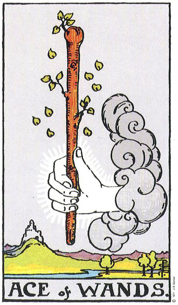
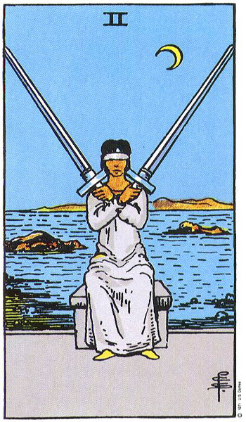
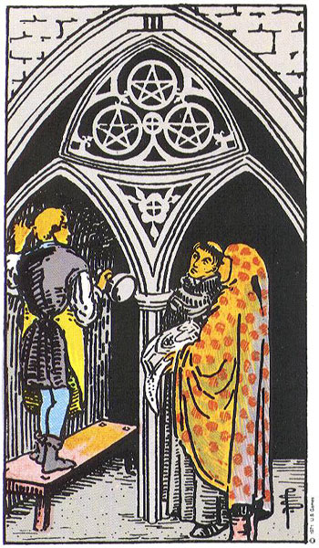
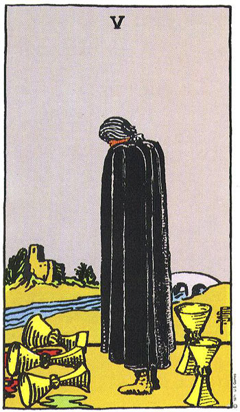

카드 읽는 법
카드 읽는 법 개요
카드를 읽는다는 것은 한 장의 그림에 적힌 '정답'을 외워 꺼내는 일이 아니라, 직관과 카드의 상징, 그리고 카드가 놓인 위치(스프레드)와 카드들 사이의 상호작용을 하나의 이야기로 엮어 내는 과정이다. 같은 카드라도 어떤 질문을 던졌는지, 어떤 맥락에 놓였는지에 따라 읽히는 결이 달라진다. 그래서 노련한 리더일수록 한 장만 보고 단정하기보다, 펼쳐진 카드 전체를 연결해 흐름을 본다.
🃏 실전 리딩 사례 시각화 (스토리텔링과 상호작용)
세 장의 카드가 단어처럼 연결되어 하나의 완성된 조언과 문장으로 읽히는 실제 사례를 살펴보세요.
💼 사례 A: "새로운 이직 기회, 어떻게 풀어나갈까?"
열정(완드) → 선택의 고뇌(소드) → 전문가 협업과 결실(펜타클)의 흐름

새로운 도전을 향한 강렬한 동기와 영감이 살아있음

두 조건 사이에서 결정을 망설이며 정보를 저울질함

혼자 고민하지 말고 팀과 소통하고 전문 기술을 보여줄 것
🌱 사례 B: "마음의 슬픔과 번아웃, 회복의 길은?"
상실의 애도(컵 5) → 고독 속 성찰(은둔자) → 관계의 치유와 연대(연인)

과거의 실패와 쏟아진 잔을 바라보며 아쉬워함

세상 소음을 끄고 홀로 등불을 켜며 내면 가치를 정비

스스로를 사랑하게 되며 타인과도 진정한 연결을 맺음
핵심 한눈에
리딩은 '직관 + 상징 + 위치 + 상호작용'을 종합해 이야기로 풀어내는 작업이다. 열린 질문에서 출발하고, 한 장을 따로 떼어 단정하지 않으며, 같은 카드도 질문과 맥락에 따라 의미가 달라진다는 점을 전제로 한다.
📚 난이도별 학습
본인의 수준에 맞춰 탭을 선택하세요. 우측 상단 언어 토글로 영어/일본어/중국어로도 학습할 수 있습니다.
🃏 한 줄로 이해하기
카드 읽기는 그림 한 장의 뜻을 외워서 답하는 게 아니라, 펼쳐진 카드들을 이어서 하나의 '이야기'로 들려주는 일이야!
🤔 왜 중요할까?
카드 뜻만 줄줄 외워서는 살아 있는 리딩이 되기 어려워. 같은 '컵 3'이라도 친구에 관한 질문일 때와 공부에 관한 질문일 때 느낌이 다르거든. 리딩의 핵심은 카드가 주는 상징, 카드가 놓인 자리(과거·현재·미래 같은 위치), 그리고 옆에 어떤 카드가 함께 나왔는지를 다 같이 읽는 거야. 이걸 익히면 카드를 외우는 부담이 확 줄고, 상황에 맞게 유연하게 풀어줄 여유가 생겨. 또 한 장만 보고 성급히 결론짓지 않는 태도는, 타로를 점치는 도구가 아니라 생각을 정리하는 참고 도구로 다루는 데도 도움이 돼.😌
🌱 꼭 알아둘 말
- 직관: 카드 그림을 처음 봤을 때 떠오르는 느낌. 해석의 출발점이야.
- 상징: 카드 속 인물·색·사물이 가리키는 보편적 의미. 카드의 '단어'야.
- 위치(포지션): 카드가 놓인 자리. 같은 카드도 자리에 따라 다르게 읽혀.
- 상호작용: 함께 나온 카드들이 서로의 뜻을 키우거나 눌러주는 관계.
- 열린 질문: '예/아니오'로 답하기 어려운, 넓게 살펴보게 하는 질문이야.
📖 쉽게 풀어보기
리딩은 단어를 모아 문장을 만드는 일과 닮았어! 카드 한 장은 '단어', 카드가 놓인 위치는 그 단어의 '역할(주어인지 결과인지)', 카드들 사이의 관계는 단어를 잇는 '문법'에 가까워. 단어만 따로 외쳐서는 뜻이 안 통하듯, 카드도 한 장씩 떼어 놓으면 이야기가 안 돼. 위치와 옆 카드를 함께 보고 문장으로 엮을 때 비로소 뜻이 살아나!
⭐ 한 장 요약
- 리딩은 직관·상징·위치·상호작용을 종합하는 과정이야.
- 카드를 외우기보다 이야기로 엮는 연습이 더 중요해.
- 한 장만 보고 단정하지 않아!
- 같은 카드도 질문과 맥락에 따라 다르게 읽혀.
- 열린 질문에서 시작해야 풍부하게 풀어낼 수 있어.
이론 깊이 들어가기
리딩은 흔히 네 겹의 정보를 겹쳐 읽는 작업으로 설명한다. 첫째는 직관으로, 카드를 펼친 순간의 첫인상이다. 둘째는 카드 자체의 상징으로, 그림에 담긴 인물·도구·풍경·숫자가 가리키는 보편적 의미다. 셋째는 위치로, 스프레드에서 그 카드가 어떤 자리에 놓였는가다. 같은 '죽음' 카드라도 '과거' 자리에 있으면 이미 지나간 변화로, '조언' 자리에 있으면 놓아주라는 권유로 읽는 식이다. 넷째는 카드 간 상호작용으로, 이웃한 카드가 의미를 더하거나 덜어 준다. 리더는 이 네 겹을 따로 보지 않고 하나의 이야기로 묶는다. 이때 핵심 기법이 스토리텔링이다. 카드를 왼쪽에서 오른쪽으로, 혹은 위치 순서대로 따라가며 "그래서 다음에는…"으로 이어 가면 흩어진 카드가 한 편의 서사가 된다. 또한 질문 자체가 결과를 크게 좌우하므로, '예/아니오'보다 상황을 넓게 보게 하는 열린 질문을 권한다. 그리고 어떤 단계에서도 한 장을 떼어 단정하지 않는 것이 원칙이다.
핵심 메커니즘
📐 네 겹 종합과 스토리텔링
직관(첫인상) → 상징(카드의 뜻) → 위치(자리의 역할) → 상호작용(이웃 카드)의 순서로 정보를 쌓고, 이를 위치 순서를 따라 한 줄의 이야기로 이어 읽는다. 카드는 '단어', 위치는 '문법', 이야기는 '완성된 문장'에 해당한다고 본다.
대표 사례
📐 사례 1
세 장 스프레드(과거·현재·미래)에서 같은 '컵 5'가 '과거' 자리에 나오면 이미 겪은 상실이나 후회로 읽고, '미래' 자리에 나오면 앞으로 마주할 아쉬움에 대비하라는 신호로 읽는다. 카드는 같아도 위치가 의미의 방향을 바꾼다.
📐 사례 2
'탑'(급격한 변화)이 '별'(희망·회복) 옆에 나오면, 무너짐 뒤에 오는 재건의 이야기로 누그러뜨려 읽을 수 있다. 같은 '탑'이 어두운 분위기의 카드들과 함께 나오면 충격이 강조되는 식으로, 이웃 카드와의 상호작용이 톤을 바꾼다.
현대적 전개
오늘날 많은 리더는 타로를 미래를 맞히는 도구라기보다, 질문자가 자기 상황을 다른 각도에서 들여다보도록 돕는 성찰·상담의 보조 도구로 다룬다. 이 흐름에서는 카드의 '고정된 답'을 강요하기보다, 질문자가 카드를 보며 스스로 의미를 길어 올리도록 열린 대화를 이끄는 방식을 참고한다.
전문가 레벨 이해
숙련된 리딩은 네 겹의 정보를 순차적으로 쌓는 데 그치지 않고, 카드 전체가 이루는 패턴을 한눈에 조망하는 단계로 나아간다. 예컨대 한 스프레드에 같은 슈트(컵·완드·검·펜타클)가 몰려 있으면 그 영역(감정·열정·사고·물질)이 질문의 중심임을 읽고, 메이저 아르카나가 많이 나오면 본인의 의지로 통제하기 어려운 큰 흐름이 작동한다고 해석하는 식이다. 또한 리더는 자신의 직관적 인상과 카드의 전통적 상징이 어긋날 때 둘을 어떻게 조율할지 끊임없이 판단한다. 이 과정에서 주의할 점은 확증 편향과 콜드 리딩의 위험이다. 질문자의 반응을 보며 해석을 끼워 맞추거나, 누구에게나 들어맞는 모호한 진술(이른바 바넘 효과)로 흐르기 쉽기 때문이다. 그래서 윤리적인 리더는 단정·예언을 피하고, 카드를 '확정된 미래'가 아니라 '지금 상황을 비추는 거울'로 제시하는 태도를 참고한다. 결국 전문성은 더 많은 키워드를 아는 데서 오기보다, 질문을 잘 다듬고 이야기를 책임감 있게 엮으며 한계를 정직하게 인정하는 데서 온다고 본다.
최신 연구·쟁점
심리학에서는 타로 리딩의 설득력 상당 부분이 바넘·포러 효과, 콜드 리딩, 확증 편향 같은 일반적 인지 기제로 설명된다고 본다. 즉 카드 자체가 미래를 안다기보다, 모호하고 긍정적인 진술이 누구에게나 들어맞게 느껴지는 경향이 작동한다는 관점이다. 한편 상담·표현예술 분야 일부에서는 타로 이미지를 자유 연상과 자기 성찰을 촉발하는 도구로 활용하기도 하는데, 이는 점술적 예측과는 구분해 다룬다. 어느 쪽이든 카드 읽기를 의학·법률·재정 같은 중대한 결정의 근거로 삼는 것은 권하지 않으며, 참고 정도로 한정하는 태도가 강조된다.
관련 분야
- 인지심리학 — 바넘 효과·확증 편향 등 해석을 그럴듯하게 만드는 기제를 다룬다
- 상징학·기호학 — 이미지가 의미를 만들어 내는 방식을 분석한다
- 상담·표현예술치료 — 이미지를 매개로 한 자기 성찰 기법과 맞닿는다
더 읽을거리
- "Seventy-Eight Degrees of Wisdom" — Rachel Pollack
- "The Tarot: History, Symbolism, and Divination" — Robert M. Place
- "A Complete Guide to the Tarot" — Eden Gray
🕹️ 직접 해보기 — 리딩 네 겹 순서
카드를 읽을 때 정보를 쌓는 네 겹의 순서대로 클릭하세요.
🎮 3D 미니게임
이 챕터에서 배운 내용을 게임으로 확인해보세요. 떠 있는 보기 중 정답을 클릭!